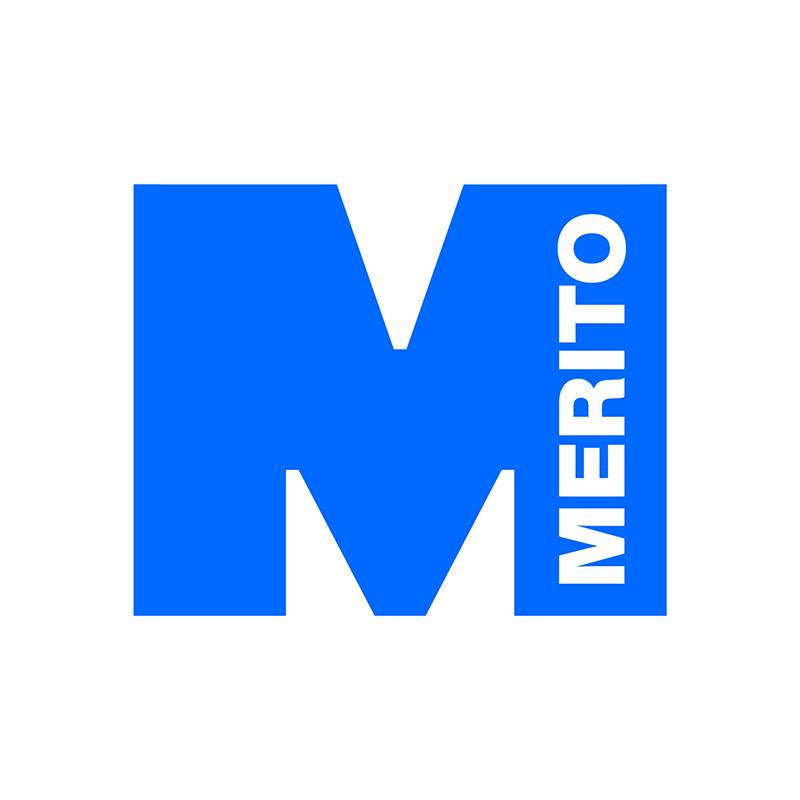
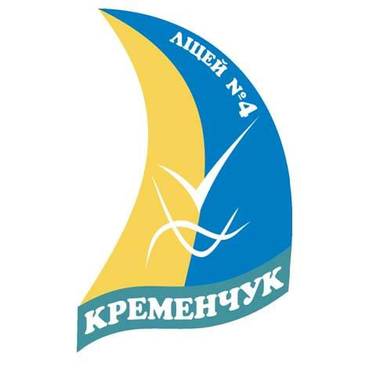

Bohdan Komarov
Profil zawodowy
Pracuję jako analityk zgłoszeń serwisowych w Nokia Solutions and Networks.
Na obecnym stanowisku jestem odpowiedzialny za kontakt z klientami z Europy, Bliskiego Wschodu i Afryki (głównie w języku angielskim).
Obejmuje to zdalne wsparcie techniczne, organizowanie interwencji terenowych oraz zamawianie części zamiennych.
Nadzoruję też proces wdrażania nowych pracowników.
Posiadam siedmioletnie doświadczenie w obszarze obsługi klientów, zarówno indywidualnych, jak i biznesowych.
Szybko się uczę i potrafię uczyć innych.
Wykształcenie
Wykształcenie wyższe

WSB Merito w Toruniu
(2021-2024)
Kierunek: Design w Biznesie
Specjalizacja: Projektowanie Marki i Wizerunku Firmy
Wykształcenie średnie

IV Liceum w Krzemieńczuku
(2003-2014)